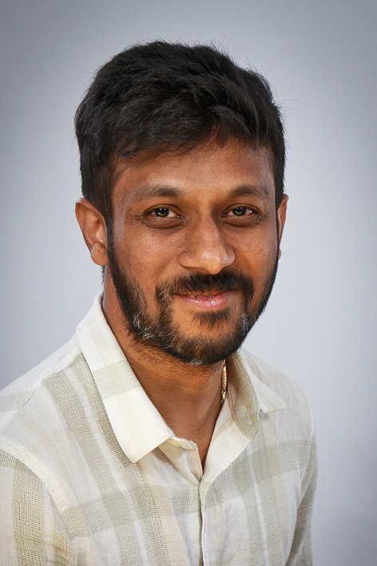

Remote Sensing Data Scientist & PhD researcher with 5+ years of experience developing production-grade Earth Observation pipelines. Expertise in SAR/InSAR processing, soil moisture retrieval algorithms, and deep learning for geospatial applications — delivering operational products within ESA Copernicus and EUMETSAT H SAF programmes.

I'm a Remote Sensing Data Scientist at Space42 in Abu Dhabi and a PhD researcher at TU Wien, Department of Geodesy and Geoinformation. I hold a Master's in Earth Oriented Space Science & Technology (ESPACE) from TU Munich with specialisation in Remote Sensing.
My work spans the full SAR processing chain — from raw SLC co-registration and InSAR deformation monitoring to operational Copernicus soil moisture products fusing Sentinel-1 and ASCAT at sub-kilometre resolution. I've delivered production pipelines within ESA Copernicus (CGLOPS) and EUMETSAT H SAF programmes.
Previously at DLR (German Aerospace Center), TU Munich, and Universität der Bundeswehr München — always at the intersection of radar signal processing, deep learning, and geospatial intelligence.